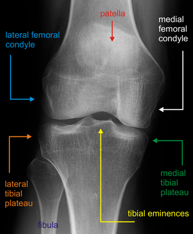

- Widened joint spaces may indicated interposed soft tissue
- Tibial eminence fractures suggest ACL injury
- Femoral epicondyle fracture indicate collateral avulsions
- Marginal femoral condyle fractures indicate capsular avulsions
- Segond sign: avulsion of the meniscotibial ligament - appears as an avulsion fracture along the lateral proximal
tibial plateau
- Associated with ACL rupture

Normal AP knee
 Normal lateral knee
Normal lateral knee